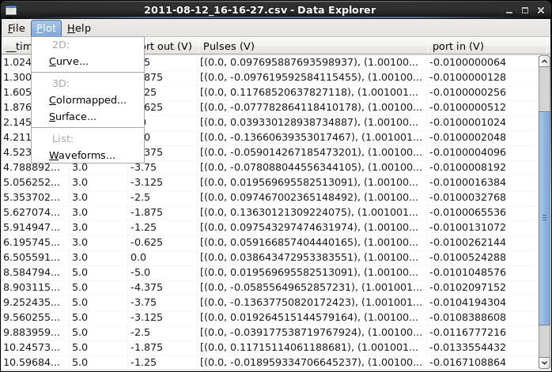

Data Explorer¶
The Data Explorer is an application that allows the user to view arbitrary CSV files, with the option to display some values in graphical form.

The data explorer is composed of a Tabular display panel, along with a menu to load and plot data. It supports data filters, which can be accessed via File -> Filters....
Plotting options¶
Combinations of scalar columns can be plotted in two or three dimensions, with the “Curve...”, “Colormapped...”, and “Surface...” menu options. These correspond to the Two-dimensional plot, Colormapped plot, and Surface plot.
List columns can be plotted in three dimensions with the “Waveforms...” menu option, which corresponds to the Surface plot in Waveform style.